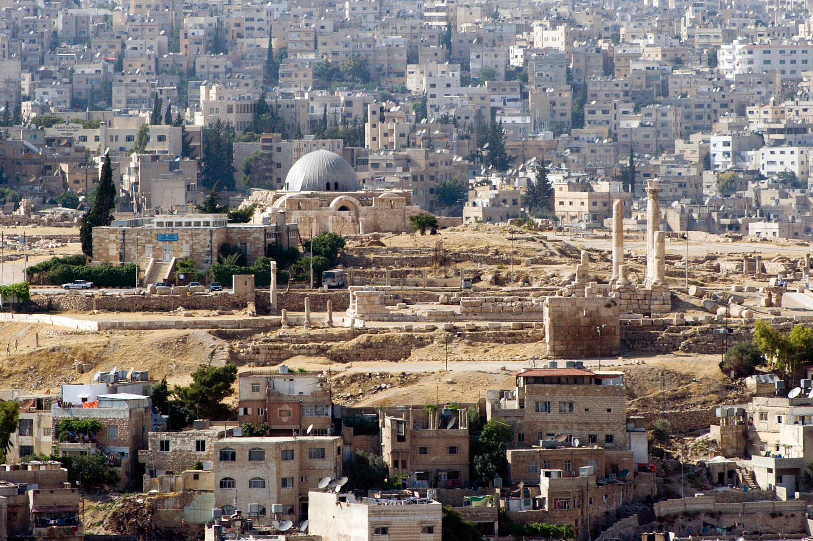

Explore Jordan's signature destinations, from archaeological landmarks to desert reserves and coastal escapes.
Jordan's Vibrant Cities
Discover cities where historic streets, local markets, food culture, and modern neighborhoods sit side by side.

Amman
Amman is a welcoming capital of hills, Roman ruins, markets, galleries, and neighborhood cafes. It is also one of the best places to taste Jordanian food and see daily life unfold.
Aqaba offers Red Sea beaches, coral reefs, boat trips, and a laid-back waterfront atmosphere. Its location makes it a natural stop between Wadi Rum and southern Jordan's coastal experiences.
As-Salt is known for honey-colored Ottoman-era architecture, hillside streets, and a strong sense of community heritage. Its historic core offers a quieter, more local city experience.
Madaba is known as the City of Mosaics, with churches and workshops preserving detailed Byzantine and Umayyad designs. The famous sixth-century map of the Holy Land remains one of its most important treasures.
Irbid is a northern city with a youthful university atmosphere and easy access to archaeological sites such as Umm Qais. It is a useful base for exploring Jordan's green highlands and northern heritage routes.
Zarqa is one of Jordan's largest urban centers and a practical gateway to the eastern desert. Its surrounding region connects travelers with desert castles, open landscapes, and lesser-known routes beyond the capital.